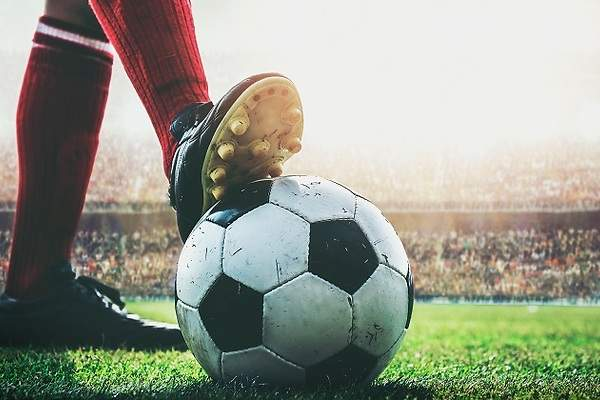
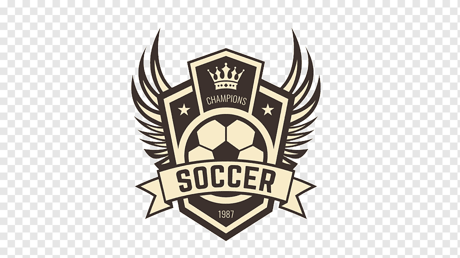
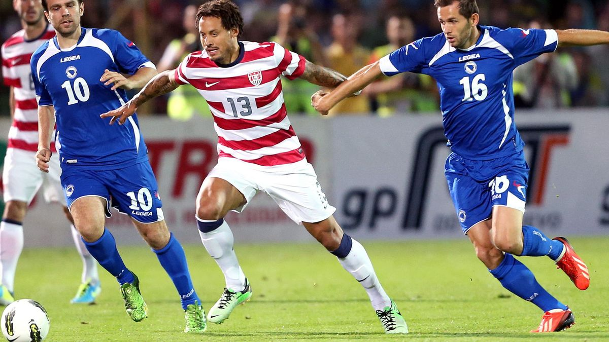
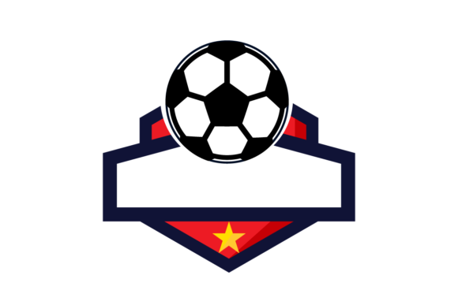

El fútbol es uno de los deportes más vistos y jugados del mundo y se podria decir que es el
mejor del muando. Profesionalmente, los jugdores forman parte de sus equipos nacionales e
individuales. Forman parte de las competencias diefrentes y estas competencias tienen sus
reglas futbolisticas.
Desarrollo
El fútbol o futbol (del inglés británico football, traducido como balompié) es un deporte
de equipo jugado entre dos conjuntos de once jugadores cada uno y algunos árbitros que se
ocupan de que las normas se cumplan correctamente. Es ampliamente considerado el deporte más
popular del mundo, pues lo practican unas 270 millones de personas.4 También se le conoce
como futbol asociación o fútbol asociación, nombre derivado de The Football Association,
primera federación oficial del mundo en este deporte y que utilizó ese nombre para
distinguirlo de otros deportes que incluyen la palabra "futbol" o "fútbol".5 En algunos
países de habla inglesa también se le conoce como soccer, abreviatura de association, puesto
que el nombre de football en esos países se asocia mayoritariamente a otros deportes con esa
denominación
Motivacion
Creo que elegi este tema porque el futbol es mi deport favorito y porque me parece el mejor
deporte del mundo. Todos los dias interacruo de alguna forma con este deporte; es por eso
que elegi este tema

Wallpaper soccer
Ranking
17/02/2022
Top 10 equipos de futbol
Se realizará un top 10 de equipos de futbol.
Napoli
Juventus
PSG
Chelsea FC
Inter Milan
Ajax Amsterdam
Real Madrid
Liverpool FC
Manchester City
Bayern Munich

Wallpaper soccer
Sitios oficiales
17/02/2022
5 sitios oficiales de equipos de futbol
Se realizará un listado con links a páginas de equipos de futbol.
El video esta muy bueno, pero yo agregaria la relacion de los resultados del partido con
otros partidos.
Me parece que el video cumple con su funcion de informar acerca del partido
20/02/2022
Futbol
El fútbol es uno de los deportes más populares del mundo. Es practicado en prácticamente
todos los países del mundo, los cuales se dan cita cada cuatro años para disputarse la copa
mundial, y mantienen a lo largo del año sus distintas ligas regulares.1
El fútbol es un deporte jugado en un campo rectangular con dos porterías entre dos equipos
de once jugadores cada uno con una pelota esférica, la cual debe ser pateada. Es el más
practicado y más popular entre los espectadores, con un seguimiento de unos 4 mil
millones de aficionados. El objetivo del juego es introducir el balón el mayor número
posible de veces en la portería del contrario, esto se llama marcación de un gol, el
equipo vencedor es el que consiga introducir más goles.1
El fútbol es el deporte más popular del mundo y, personas de todo sexo y edad lo disfrutan
en diferentes modalidades, cada una ajustada a los gustos y condiciones de los
jugadores, incluyendo aquellos con algún nivel de discapacidad. El balompié que vemos en
TV es el más conocido, pero poco a poco otros tipos de fútbol entran con fuerza y ganan
reconocimiento oficial como deporte, incluso dentro de la FIFA y comité olímpico. 1
El fútbol de la asociación paralímpica, a menudo denominado fútbol para ciegos, es una de
las variaciones más conocidas de este deporte. Lo juegan jugadores con discapacidad
visual, incluida la ceguera. Para garantizar que todos estén en pie de igualdad, los
jugadores deben usar una venda en los ojos durante los partidos, independientemente del
grado de su hándicap.1
Historia del futbol
Se juega en campos pequeños que pueden acomodar hasta cuatro jugadores de campo y un portero
vidente, por equipo. Cada equipo también tiene un sexto jugador, que se para al margen y
guía a sus compañeros hacia el balón. Asimismo, la pelota está equipada con un dispositivo
electrónico que emite un sonido constante, lo que facilita su seguimiento.2
Los orígenes antiguos de este deporte son inciertos, pero en el siglo III a. C. en China
se practicaba un deporte similar. En este remoto antecedente del fútbol, los soldados de
la Dinastía Han practicaban un ejercicio llamado ts’uh Kúh (también llamado luju o tsu
chu), que consistía en arrojar una bola con los pies hacia una pequeña red. En algunas
variantes, el jugador debía hacerlo mientras se defendía del ataque físico de sus
rivales.2
Siglos después hubo prácticas más semejantes al fútbol moderno, como el kemari japonés, de
tipo más ceremonial2
El fútbol nació mucho antes de lo que podrías imaginarte. Las reglas del fútbol y la
imagen actual son muy diferentes de sus orígenes. Con el tiempo, fue evolucionando y se
fue regulando gracias a las instituciones que nacieron con el propósito de vivir por y
para el fútbol. En este artículo descubrirás la historia de fútbol en resumen, desde la
fundación de la FIFA y UEFA, hasta la organización de las principales competiciones y la
evolución que ha dado pie al fútbol moderno tal como lo conoces hoy en
día.2
Efectos positivos del futbol
Lo único que se necesita para jugar es una pelota y dos porterías que se pueden marcar en
el
suelo con tiza o cal; y para aquellos que lo deseen y se lo puedan permitir, prendas
deportivas como camisetas, pantalones cortos, medias y botas de fútbol. Se puede jugar
incluso con los pies descalzos. Esta simplicidad es la razón de la popularidad del
juego.
Debido a que los contactos no son tan violentos como en otros tipos de fútbol y a que
una
pelota redonda es más fácil de controlar que una ovalada, el juego pueden practicarlo
incluso los más jóvenes.El deporte y las actividades físicas recreativas ofrecen un
marco
apropiado y aceptado para plantear a los jóvenes el tema de sus propios cuerpos y su
anatomía.3
Sin embargo, no sería justo diseñar el pasado del fútbol con la exclusiva referencia a su
nacimiento inglés, ya que existieron juegos de diversa índole a los que cabe considerar
como precedentes del fútbol, aunque no existan datos absolutamente sólidos al respecto.
3
La UEFA Champions League, originalmente conocida como la Copa de Europa, es la competencia
europea de clubes organizada por la Unión de Asociaciones Europeas de Fútbol (UEFA),
considerada la más importante y prestigiosa del continente europeo. Algo que ha
caracterizado esta competencia es la magia que se ve en los partidos. Y es que además de
ver a los mejores clubes europeos y a los mejores jugadores del mundo compitiendo, a lo
largo de la historia de este torneo hemos podido ver momentos históricos, equipos que
rompen todos los pronósticos y las vivencias más significativas dentro del mundo del
deporte. 3
El Mundial de Fútbol es la competición internacional de fútbol masculino más importante
del
mundo. Está organizada por la FIFA (Federación Internacional de Fútbol Asociación), un
organismo que agrupa a todas las federaciones nacionales de fútbol.3
 Meme
Meme